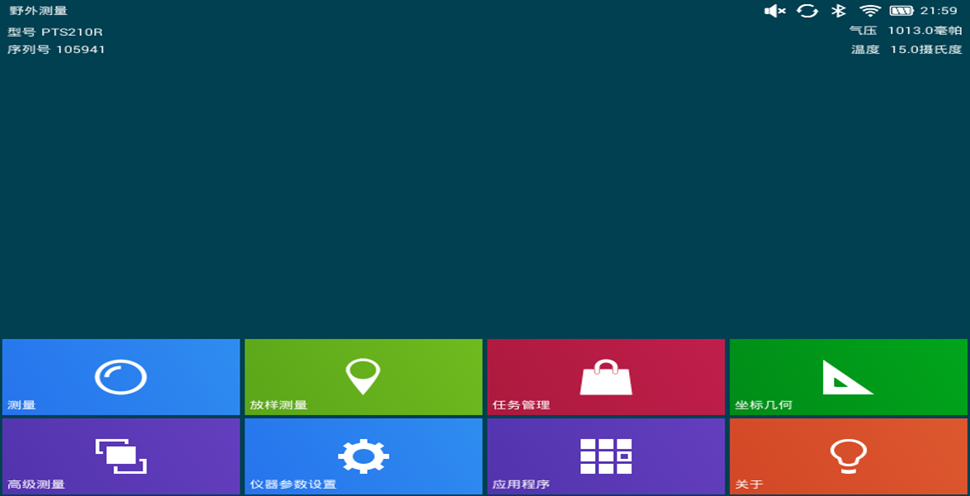

<div id="single-portfolio">
	<div id="portfolio-details" class="container">
		<a class="close-folio-item" href="#"><i class="fa fa-times"></i></a>
		
		<div class="row">
			<div class="col-sm-9">
				<div class="project-info">
					<h3>专业测量软件</h3>
					<p>这是一款专门为高端测绘仪器研发的测量软件，支持普通测量仪器的全部功能，包括角度，高度测量，放样，对角等</p>
					<p>这款仪器还提供先进的测量模式，如可以支持蓝牙，WiFi。4G同步数据导出，同步手机测量建模，多点测量测绘，前方测量人员刚刚获取数据，后方工程师已经可以及时对数据分析</p>
				</div>
			</div>
			<div class="col-sm-3">
				<div class="project-details">
					<h3>项目详细</h3>
					<p><span>平台: </span>mobile devices</p>
					<p><span>日期:</span> 1 Sep 2014</p>
					<p><span>需求:</span> 功能, 设计, 算法</p>
				</div>  
			</div>
		</div>
	</div>
</div>